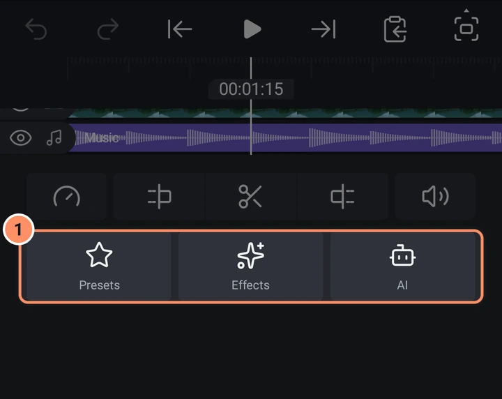
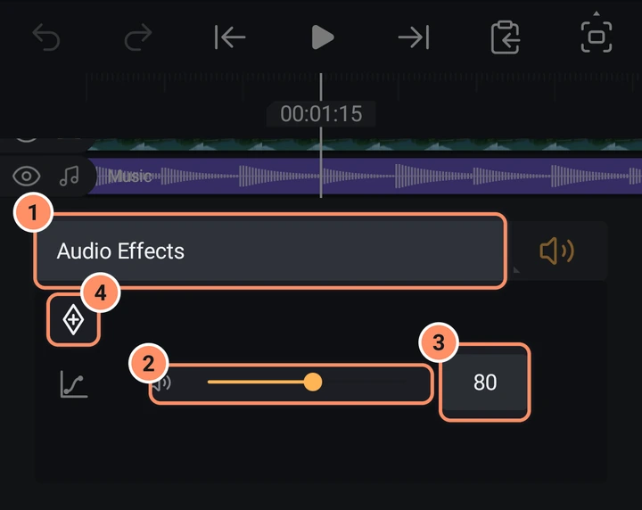
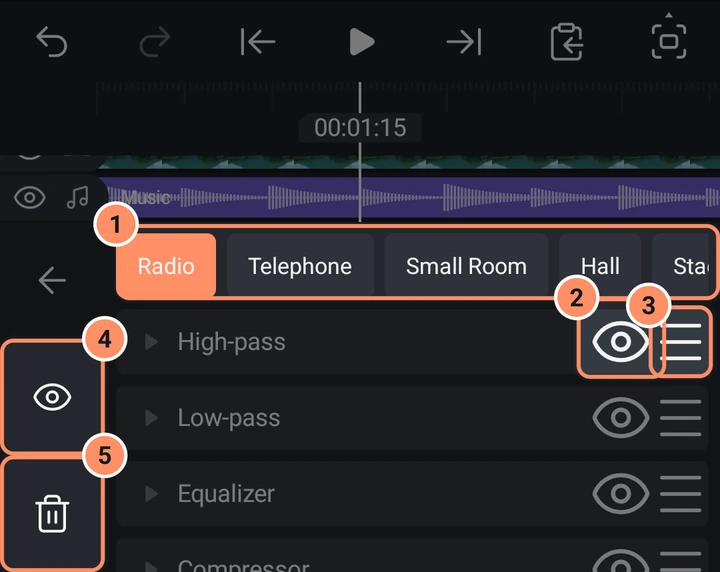

Audio
Voeg muziek en geluiden toe, stel het volume in, gebruik audio-effecten en stemfilters, markeer beats en maak spraak van tekst, allemaal offline.
Op deze pagina
Geluid in een project krijgen
AbsentMotion heeft geen ingebouwde muziek- of geluidsbibliotheek. Je gebruikt de audiobestanden op je telefoon, het geluid van je video's en stemmen die van tekst worden gemaakt.
- Toevoegen, tabblad Audio: muziek en geluiden die op je telefoon staan. Tik op een tegel om hem te beluisteren en tik op de +-strook om hem bij de afspeelkop toe te voegen. Alles bekijken opent een bestandskiezer. De eerste keer vraagt de app om toestemming om audiobestanden te lezen.
- Tekst naar spraak (hetzelfde tabblad): zie hieronder.
- Het geluid van een videoclip speelt mee met de clip. Audio extraheren in het laagmenu haalt het eruit naar een eigen audiolaag.
- Video's die je met de camera in de app opneemt, hebben het geluid van de microfoon, als je dat hebt toegestaan.
- Het effect Text Blips geeft een tekstlaag een kort piepje bij elke letter die verschijnt: zie Tekst en lettertypen.
Een audiolaag krijgt de naam van het bestand en begint bij de afspeelkop. De lengte van het project volgt altijd het einde van de laatste laag, dus een lang geluid maakt het project en de export langer.
Op de tijdlijn is een audiolaag een paarse balk met de golfvorm erin. De tools zijn Snelheid, bijsnijden en splitsen, Volume, Voorinstellingen, Effecten, Beats markeren en AI. De stemfilters zitten in Effecten. AI bevat Ruis verminderen en Automatische ondertitels voor de geselecteerde clip.

Volume
Volume (het luidsprekericoon) opent het volumepaneel voor geluidsclips en video's. De schuifregelaar gaat van 0 % tot 150 % (standaard 100 %) en heeft een invoervak. Je kunt hem animeren met de knoppen voor keyframes en easing. Zo maak je fade-ins en fade-outs. Een clip op 0 % zonder keyframes is gedempt, en het luidsprekericoon laat dat zien.
De eerste knop van het paneel, Audio-effecten, opent de effecten van de clip.

Het geluid van een clip volgt de snelheid ervan (zie Foto's, video en snelheid). Bronnen met meer dan twee kanalen worden teruggemixt naar stereo.
Niveaumeter
Tijdens het afspelen zie je het niveau van het hele project op een meter. Op een telefoon is dat de dunne lijn onder de afspeelbalk: de linkerhelft groeit vanuit het midden mee met het linkerkanaal en de rechterhelft met het rechterkanaal, en een kant wordt rood als het geluid oversteurt. Een tablet in liggende stand toont ook een smalle meter linksboven in het voorbeeld. Een computer toont hem links in het venster, rechts van de knoppen en onder de projectnaam: een balk L en een balk R, met daaronder het niveau van het hele project in dB.
Audio-effecten
Bij een geluidsclip opent Effecten de effectenbibliotheek meteen op de categorie Audio. Bij een videoclip staat er een categorie Audio in de gewone bibliotheek. In het volumepaneel opent de knop Audio-effecten de lijst. In de lijst:
- Chipjes met voorinstellingen bovenin vervangen de hele keten: Radio, Telefoon, Kleine kamer, Zaal, Stadion, Onder water, Echo, Basboost, Heldere stem en Noise gate.
- Elke rij heeft een naam, een oog (Bypass voor dat effect) en een greep (Volgorde wijzigen: de volgorde is de verwerkingsvolgorde).
- Audio-effect toevoegen biedt de tien effecten hieronder. Een clip kan maximaal 16 eenheden bevatten: elk effect kost er 1, Stemfilter kost er 7.
- Met de knoppen in de linkerkolom zet je alle effecten tegelijk op Bypass of kies je Alles verwijderen.

Elk effect heeft een schuifregelaar Mix (0 tot 100 %) en eigen schuifregelaars. Dubbeltik op een waarde om die te typen.
| Effect | Instellingen (bereik, standaard) |
|---|---|
| Equalizer | Een low shelf, drie middenbanden en een high shelf. Freq. laag 20 tot 1000 Hz (120), Gain laag, Freq. mid 1 tot 3 (400, 1500, 5000 Hz), Gain en Q (0,1 tot 10), Freq. hoog 1000 tot 20000 Hz (10000), Gain hoog. Gains gaan van -24 tot 24 dB. |
| Laagdoorlaat | Kantelfrequentie 20 tot 20000 Hz (5000), Resonantie 0,1 tot 10 (0,71), Helling 12 of 24 dB/oct |
| Hoogdoorlaat | Kantelfrequentie (200), Resonantie, Helling, zoals hierboven |
| Galm | Ruimtegrootte, Demping, Nat, Droog, Breedte (0 tot 100 %), Voorvertraging 0 tot 200 ms |
| Echo | Tijd 1 tot 2000 ms (250), Feedback 0 tot 95 %, Echoniveau, Pingpong, Lage tonen afsnijden 20 tot 2000 Hz |
| Compressor | Drempel -60 tot 0 dB (-18), Ratio 1 tot 20 (4), Attack, Release, Knee 0 tot 24 dB, Make-up 0 tot 24 dB |
| Noise gate | Drempel -100 tot 0 dB (-50), Attack, Hold, Release, Bereik 0 tot 100 dB |
| Hoge toon | Hoeveelheid 0 tot 12 halve tonen (5), omhoog |
| Lage toon | Hoeveelheid 0 tot 12 halve tonen (5), omlaag |
| Stemfilter | Toonhoogte -12 tot 12 halve tonen, Bas, Hoge tonen, Dof, Dun, Volheid, Echo, Galm, Pingpong |
Galm en echo klinken na het einde van de clip nog tot tien seconden door en sterven dan uit. Aan het einde van de keten staat altijd een limiter die je niet kunt aanpassen. Die voorkomt dat het totale geluid oversteurt (het plafond is -1 dB).
Stemfilters
Open Effecten > Stemfilters voor tien stemmen: Helium, Diep, Basboost, Volle stem, Heldere stem, Galmend, Etherisch, Onder water, Goedkope microfoon en Telefoon. Kies je er een, dan krijgt de clip één effect Stemfilter, dat je daarna kunt bijstellen in de audio-effecten. Kies je een andere stem, dan vervangt die het effect.
Ruis verminderen
De tool AI voor audioclips vermindert achtergrondruis op de telefoon: zie AI-tools.
Beats markeren
Beats markeren is een tegel in de tools van een audiolaag, en een optie in het laagmenu van elke clip met geluid. De app luistert alleen naar die clip en zet een bladwijzer op elke beat die hij vindt (het tempo moet tussen 60 en 180 beats per minuut liggen en de beats moeten een vast ritme volgen). Knip daarna je video op de bladwijzers: de tijdlijn klikt er vast aan. De Beat-effecten (Beat Zoom, Beat Shake, Beat Flash en de andere) en Particles op On Beats bewegen op deze bladwijzers; zonder bladwijzers volgen ze hun BPM-instelling. Je ziet "N beats gemarkeerd", "Geen nieuwe beats gevonden" of "Kan geen beats vinden".
Tekst naar spraak
Toevoegen, Audio, Tekst naar spraak maakt van tekst gesproken audio, met de stemmen die Android al op je telefoon heeft. Het werkt offline en gebruikt geen onlinedienst.
- Een tekstvak ("Typ wat de stem zegt").
- Taal en Stem (de stemmen heten per taal "Stem 1", "Stem 2" enzovoort). Alleen stemmen die op de telefoon zijn geïnstalleerd staan in de lijst, en stemmen die internet nodig hebben zijn verborgen. Zijn er geen, dan meldt de app "Geen offline stemmen op dit apparaat". Je kunt stemmen toevoegen in de instellingen voor tekst-naar-spraak van je telefoon.
- Snelheid en Toonhoogte, 50 % tot 200 % (standaard 100 %).
- Voorbeeld spreekt de tekst uit zonder iets toe te voegen. Toevoegen maakt een audiolaag bij de afspeelkop, met de eerste tekens van de tekst als naam.
Geluid in je export
De mix van elke hoorbare clip (met volume, keyframes, snelheid en effecten) wordt gerenderd als je een video exporteert. Je kunt ook alleen het geluid exporteren: zie Exporteren. Wil je het geluid van een videobestand opslaan zonder een project te openen, gebruik dan Audio extraheren op het tabblad Tools: zie Het startscherm. Verborgen lagen zijn stil. Kan het geluid van een bestand niet worden gelezen, dan meldt de app dat na de export en is die clip stil.